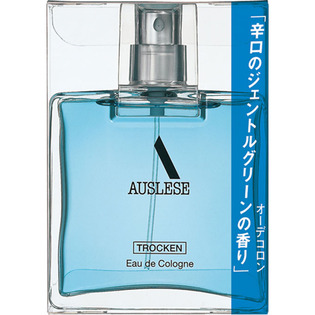

返回列表
产品名称：アウスレーゼ トロッケン オーデコロン

資生堂 アウスレーゼ トロッケン オーデコロン ＿
メーカー 資生堂
JANコード 4901872331413
商品の特徴
「さわやか・自然・清潔」な高原の風をイメージさせるすっきりとしたジェントルグリーンの香り。
成分・分量
-
用法及び用量
・シャワーのあとや外出前に、手にとって直接からだにおつけください。その場合は、日光のあたらないところにおつけください。